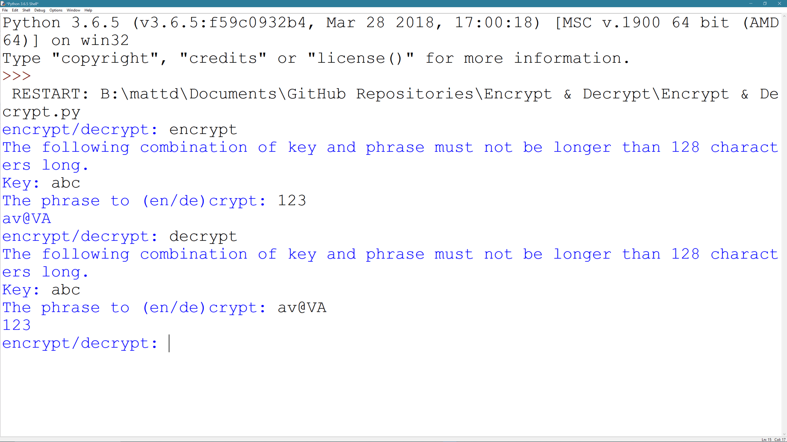
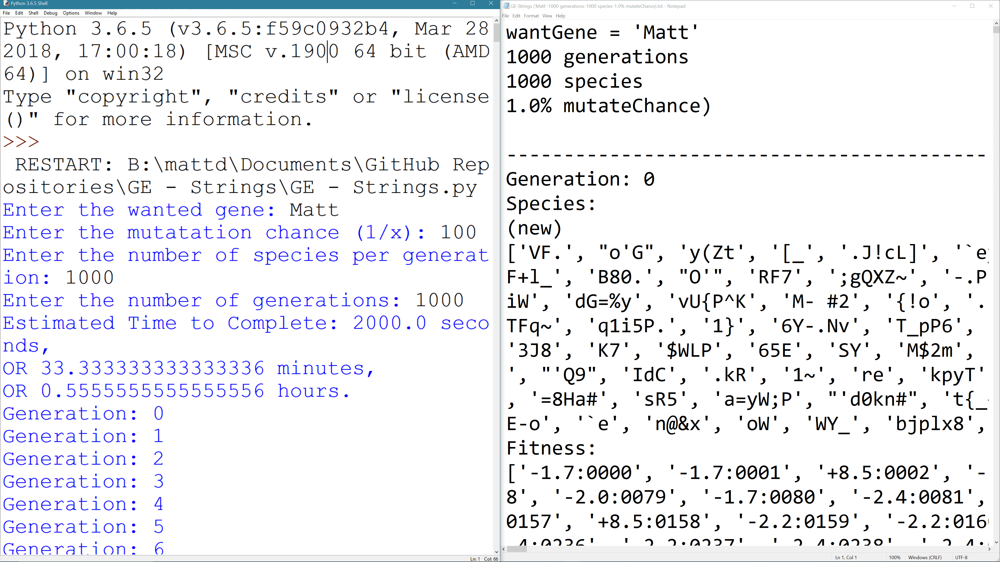
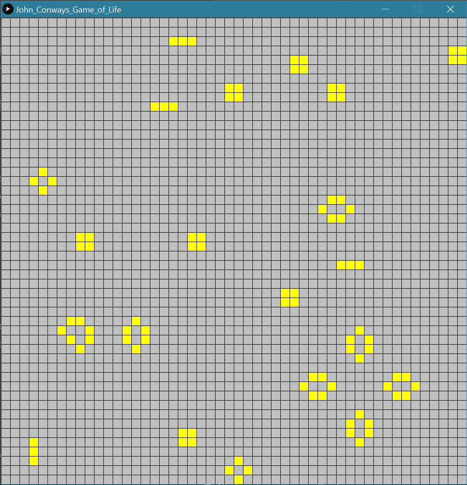
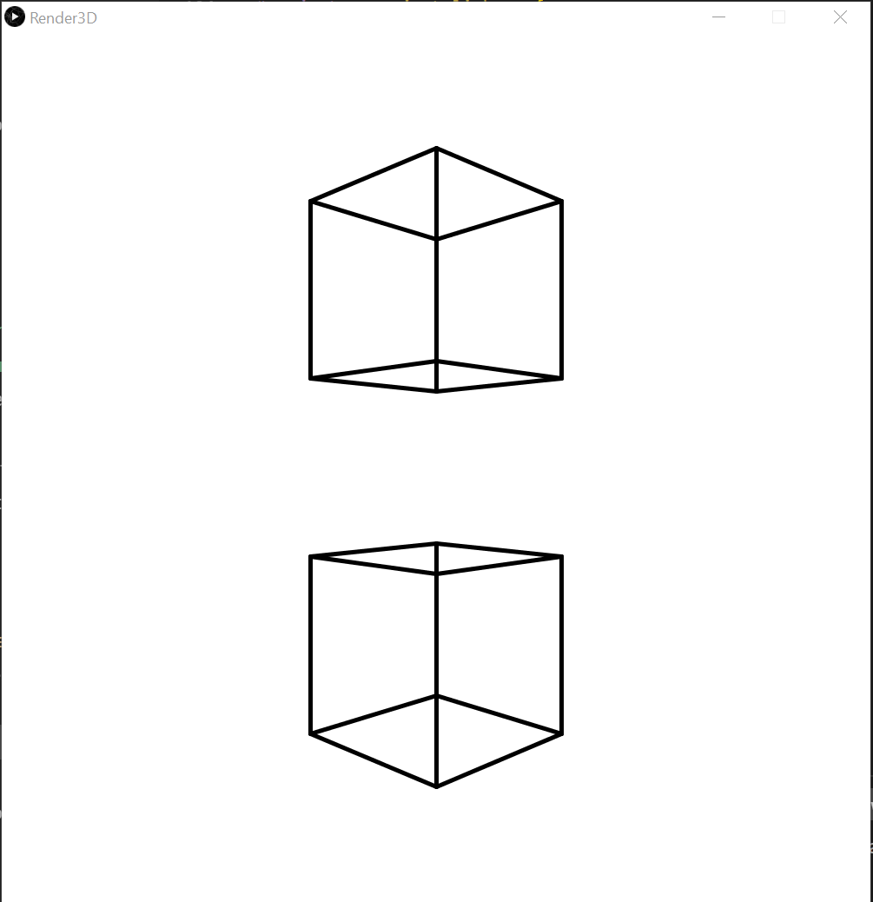
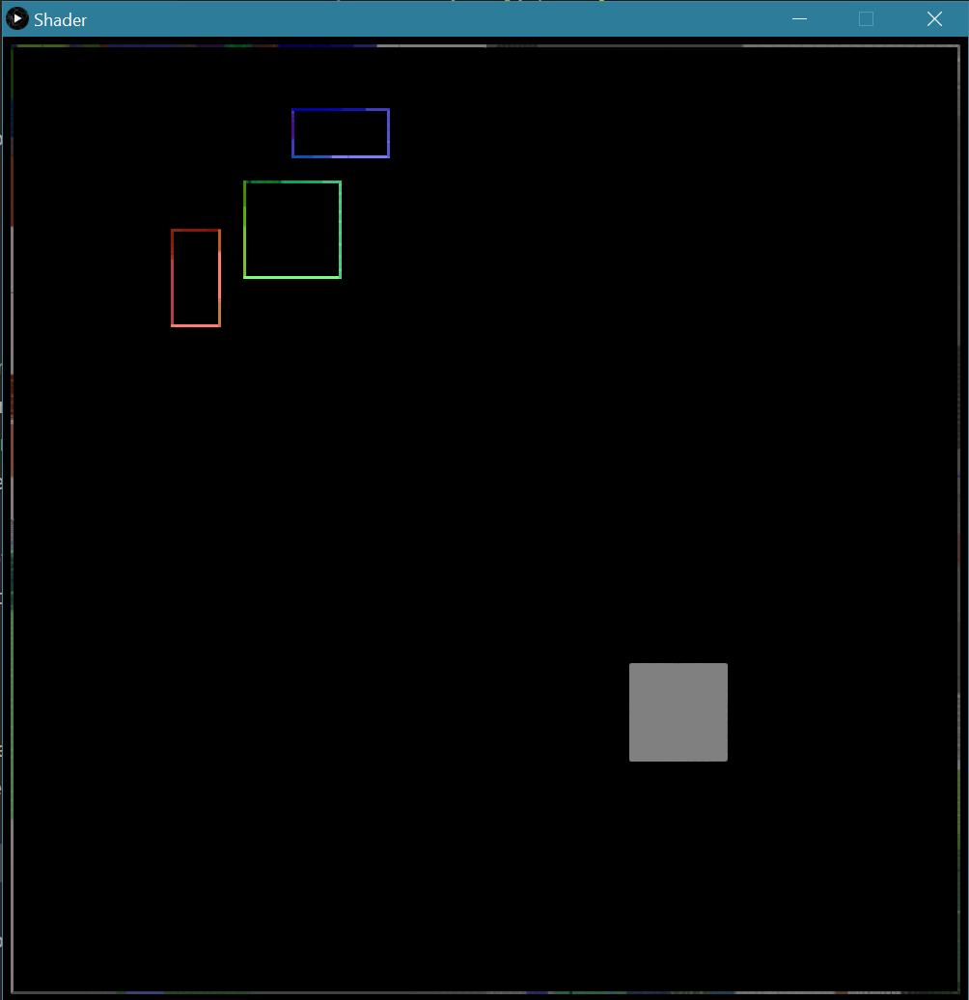
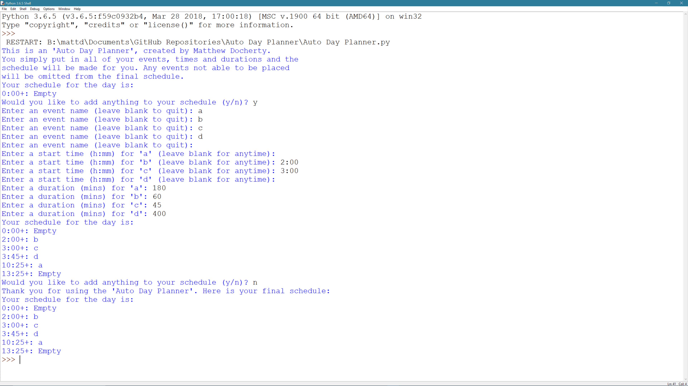
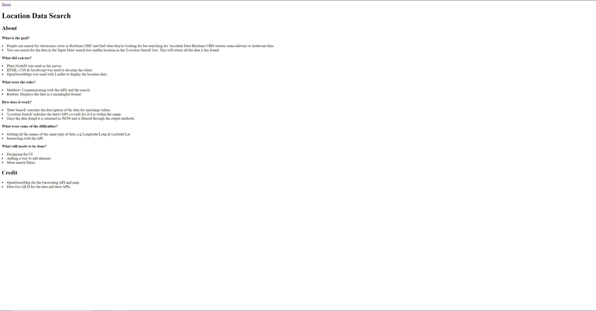
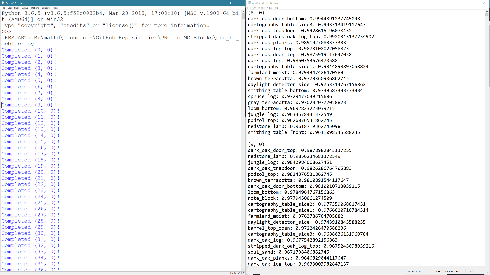
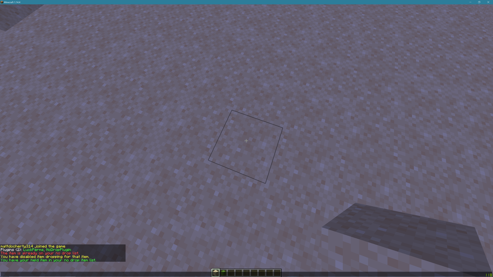

I am an engineering and IT dual degree student with a passion for learning new things and sharing my knowledge with others. I have a number of years of IT support experience. Both my previous work experiences and my volunteer experiences have given me numerous soft skills such as teamwork, communication and leadership.
I have studied several units while completing my course, from CAB240: Information Security to EGB342: Telecommunications and Signal Processing to CAB403: Systems Programming.
Engineering Major: Computer & Software Systems
IT Major: Computer Science
Current GPA: 5.625
As one of the IT service desk consultants, I was responsible for providing remote technical support via phone to a number of schools or regional corporate offices which may not have an onsite technician to assist them. These issues ranged from as simple as a password reset to diagnosing why software is failing to run correctly.
My role as a school IT technician required me to assist school staff and students with their IT issues. These issues varied from workstation deployment to basic printer troubleshooting. I was in a team of three other school technicians which required me to communicate and work well in a team to make our work efficient.
The Scripture Union youth camp leader volunteers are responsible for engaging with the campers while working with their fellow leaders as a team. Übertweak is one of these youth camps targeted towards high school aged children that love technology and are considered nerds. Recently, I have taken on the role of organising the technology for the entirety of camp.
Lead mentors for CoderDojo Brisbane are responsible for making and teaching the lesson plans, marking the attendance for each session and supervising all of the attendees. CoderDojo is a two hour session of teaching primary school aged children programming that runs for six weeks in a school term.
This is a simple encryption and decryption Python3 script that can be used to encrypt and decrypt strings. It was made in reponse to hearing about how symmetric cryptography works and me wanting to try to create one in Python.
Version: 1.0.0
Last Modified: 17 Dec 2019
Technologies: Python
This is a simple Genetic Evolution Python3 script which applies a genetic evolution program on a string to reach a target string. Included is a sample output of it attempting to reach 'Matt' with a mutatation rate of 1%, 1000 species per generation and 1000 generations total. It was made in response to hearing about how a genetic neural network works and wanting to attempt to recreate it.
Version: 1.0.0
Last Modified: 17 Dec 2019
Technologies: Python
This is a Game of Life game proposed by John Conway, made in the Processing Language Environment. I was inspired to make it after hearing about the program from the Numberphile video, Inventing Game of Life - Numberphile.
Version: 1.2.0
Last Modified: 3 Dec 2021
Technologies: Processing
This is a 3D Rendering Program, made in the Processing Language Environment. I was inspired to create it after hearing that one of the uses for matrix multiplication was 3D rendering.
Version: 1.0.0
Last Modified: 20 Dec 2019
Technologies: Processing
This is a 2D Lighting Program, made in the Processing Language Environment. I was inspired to make it after learning the basics of optics in a Physics class.
Version: 1.0.0
Last Modified: 20 Dec 2019
Technologies: Processing
This is a simple Day Organiser Python3 script used to arrange events in an efficient manner. The inspiration for this project came from someone saying that they hate fitting in all of their events.
Version: 1.0.0
Last Modified: 20 Dec 2019
Technologies: Python
This is a client webpage that gathers all of the known and chosen datasets which are within the target area. It collects the data in a synchronous manner so it appears to be really slow but it isn't. Version 1.0.0 was made as a part of GovHack 2018 (which ran from 7 - 9 Sept 2018), the team responsible was LocateData.
Version: 1.0.0
Last Modified: 16 Dec 2019
Technologies: HTML, CSS, JavaScript
This is a website that allows you to execute scripts on different computers through the web browser. I made this as a part of a QUT unit in 2018 (IFB102 - Introduction to Computer Systems).
Version: 1.0.0
Last Modified: 20 Dec 2019
Technologies: NodeJS, HTML, CSS, JavaScript
This is a Python3 script that converts a PNG to Minecraft Blocks that match the texture the best. I made this program out of my need to recreate a PNG in Minecraft.
Version: 1.3.0
Last Modified: 20 Nov 2021
Technologies: Python
This is a Spigot 1.14.4+ Plugin made for FruitServers to prevent accidental item drops by players.
Version: 1.2.0
Last Modified: 10 Nov 2021
Technologies: Java
